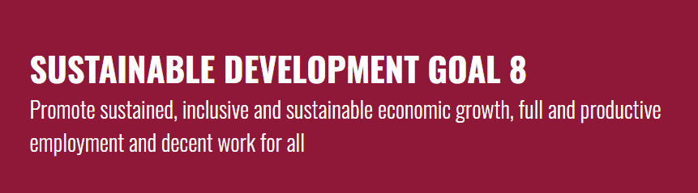
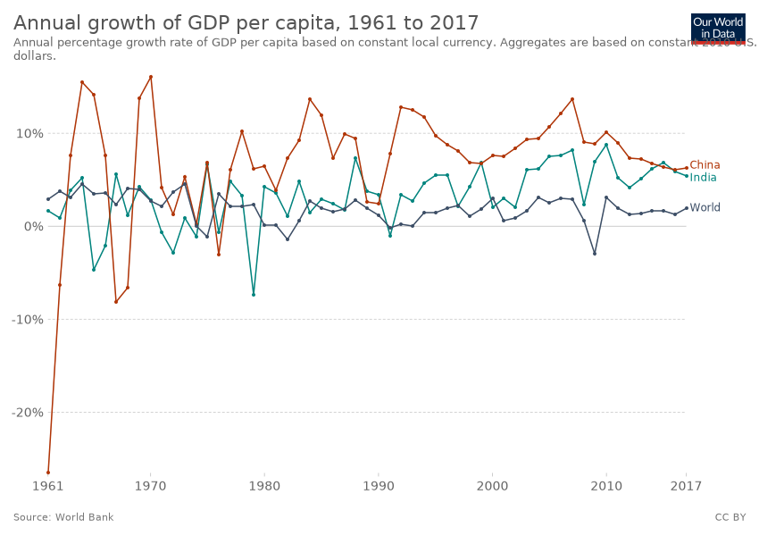
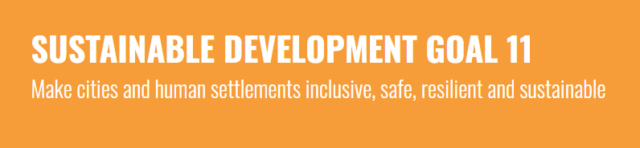
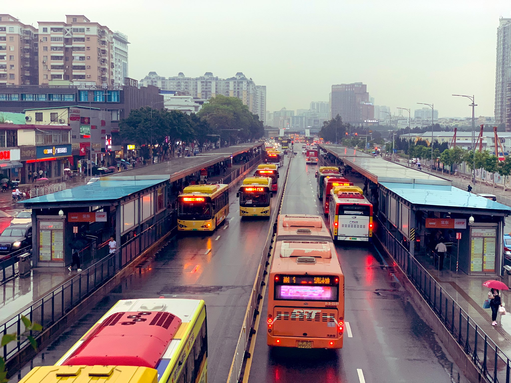
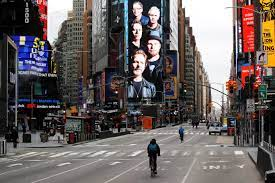
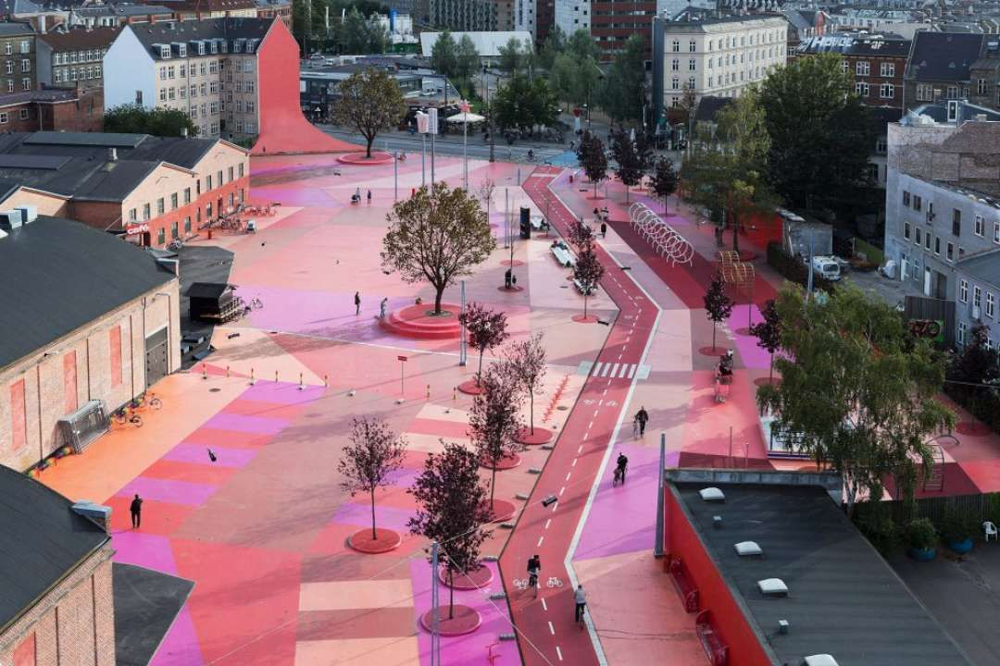

Introduction
After the global economic downturn in 2009, the world as a whole witnessed rising labour productivity and improved unemployment rates, despite large disparities across regions. Ten years later, in 2019, the global economy again slowed, with the lowest growth since 2008–2009. The coronavirus in 2020 has caused abrupt and profound changes, slowing the economy even further. It is having an adverse impact on the world's labour markets, particularly on workers in informal employment, the self-employed, daily wage earners and workers in sectors at the highest risk of disruption. In fact, we can expect the biggest increase in global unemployment since World War II. At the same time, the crisis poses a serious threat to the occupational safety and health of workers, and may increase the risk of child labour. Urgent policy measures are needed to support businesses, boost labour demand and preserve existing jobs – especially for the most vulnerable – to achieve full and productive employment and decent work for all women and men.
GDP Per Capita Growth Rate
Globally, real GDP per capita growth rate was 2.0 per cent in 2018 – the same level as the average annual growth rate between 2010 and 2018. Sustained per capita growth during this period was driven mainly by strong progress in Eastern and South-Eastern Asia and in Central and Southern Asia. In 2019, the growth rate dropped to 1.5 per cent and, in 2020, the coronavirus pandemic is pushing the world into the worst economic crisis since the Great Depression. Real GDP per capita is expected to decline by 4.2 per cent in 2020 before increasing again in 2021 at a rate of 3.1 per cent.Real GDP growth rate for LDCs reached 4.5 per cent in 2018 and 4.8 per cent in 2019. Due to the pandemic, that rate is expected to weaken to 0.8 per cent in 2020 and is projected to increase again at a rate of 4.6 per cent in 2021. This means that LDCs are falling short of the SDG target of at least 7 per cent real GDP growth per year. Annual growth rate of global real GDP per capita and annual growth rate of real GDP of LDCs, 2018–2021 (percentage)
A steady rise in global labour productivity since 2000 may falter in the face of the coronavirus crisis

The global average output per worker – a measure of labour productivity – has steadily increased since 2000, with growth interrupted only briefly during the economic downturn of 2009. The growth rate in labour productivity reached 1.6 per cent in 2018 and 1.4 per cent in 2019. However, these levels varied considerably across regions: in 2019, while labour productivity declined in Latin America and the Caribbean, Northern Africa and Western Asia and sub-Saharan Africa, it rose everywhere else and was especially fast in Eastern and South-Eastern Asia and in Central and Southern Asia. Labour productivity growth in 2020 may be adversely affected by the global reduction in working hours and the economic decline caused by the coronavirus crisis.
The pandemic will have a particularly adverse impact on workers in the informal economy

In 2016, an alarming 61 per cent of workers globally were engaged in informal employment. Typically, informality has a negative impact on earnings, working time, occupational safety and health, and working conditions generally. In 2016, informal employment was much more widespread in the agricultural sector (94 per cent) than in the non-agricultural sector (51 per cent). Reliance on informal workers was also more prevalent in certain regions, including sub-Saharan Africa (89 per cent) and Central and Southern Asia (86 per cent). Due to unemployment and underemployment caused by the coronavirus crisis, some 1.6 billion workers in the informal economy – half of the global workforce – may be significantly affected. Globally, the income of informal workers is estimated to have dropped by 60 per cent in the first month of the crisis, and up to 81 per cent in some regions. Significant policy measures are urgently needed to protect both enterprises (particularly smaller businesses) and workers in the informal economy to achieve decent work for all by 2030.

Introduction
Over 90 per cent of COVID-19 cases are occurring in urban areas. The pandemic is hitting the most vulnerable the hardest, including the 1 billion residents of the world’s densely populated informal settlements and slums. Even before the new coronavirus, rapid urbanization meant that 4 billion people in the world’s cities faced worsening air pollution, inadequate infrastructure and services, and unplanned urban sprawl. Safe public transportation, reliable basic services and open public spaces are especially important now to ensure the health and livelihoods of urban dwellers. Successful examples of containing COVID-19 demonstrate the remarkable resilience and adaptability of urban communities in adjusting to new norms. Cities will emerge from the pandemic, but whether they are prepared for the next crisis will depend on how much they can advance data-driven inclusive and sustainable urban development.
Global progress has been reversed in reducing the share of slum dwellers, whose vulnerability has been intensified by the pandemic

The impacts of COVID-19 are exacerbating the vulnerability of slum dwellers and those living in informal settlements. Many of these urban residents already suffer from inadequate housing with limited or no access to basic infrastructure and services, including water, sanitation and waste management. Overcrowding of public transportation and limited health-care facilities have had a catastrophic effect on these communities, turning them into epicentres within epicentres. Many urban dwellers in the developing world work in the informal sector and are at high risk of losing their livelihoods as cities lock down. Concerted efforts by national governments, city authorities and other stakeholders led to a significant decline in the proportion of the urban population living in slums – from 28 per cent in 2000 to 23 per cent in 2014. Alarmingly, that trend has reversed as rapid urbanization outpaces the development of housing, infrastructure and services. The proportion of the urban population living in slums rose to 24 per cent in 2018, or over 1 billion people, due to increases in Northern Africa and Western Asia and sub-Saharan Africa.
More public transport is needed in the world’s cities
Reliable, accessible and affordable public transportation reduces pollution and traffic and promotes productivity and inclusion. Only half the world’s urban population has convenient access to public transportation, according to 2019 data from 610 cities in 95 countries. Access is measured as the share of the population within 500 metres walking distance of low-capacity transport systems (buses and trams) and 1,000 metres distance to high-capacity systems (trains, subways and ferries). In addition, many cities have a high prevalence of informal transport systems, which are often deficient in terms of regularity and safety. A focus on short-term investments in road-based public transport infrastructure can translate into higher access to low-capacity public transport systems. While the pandemic is ongoing, cities may need to introduce additional safety measures to mitigate the elevated risk of coronavirus transmission in crowded public transport. Global data illustrate the need to enhance access to public transport systems that are well integrated with walking and cycling paths through long-term mobility plans and targeted investments.
Beyond the devastation, the pandemic has prompted a positive rethinking of our cities
How we plan and develop our urban areas, infuse infrastructure and services, mitigate risks and respond to the needs of growing populations determines the long-term prosperity of cities and their people. Over the period 1990 to 2015, most urban areas recorded a general increase in the amount of built-up area per person – that is, the physical expansion of cities was faster than their rates of population growth – according to 2019 data from a representative global sample of 755 cities from 95 countries. In some cities, this rapid expansion reflects unplanned urban sprawl, making the delivery of services more costly and inefficient. On average, all regions except for sub-Saharan Africa and Eastern and South-Eastern Asia recorded a consistent increase in the built-up area per capita. The pandemic has made it clear that urban planning is crucial for better public health and for mitigating people’s vulnerabilities to other hazards, such as natural disasters. As of May 2020, 154 countries have some form of national urban plan. Many national and city governments are now revisiting those plans to help prevent the next pandemic.
Open public spaces in the world's cities promote health and productivity, but access is often limited
With cities on lockdown, open public spaces are even more in demand. As with public transport, equitable access to open and public spaces contributes to enhanced productivity and health. In particular, open spaces as places of commerce are critical to the informal economy, which many people depend on for their livelihoods. The share of land allocated to streets and open spaces averaged only about 16 per cent globally, according to 2019 data from 610 cities in 95 countries. Of this combined share, streets accounted for about three times as much urban land as open public spaces, such as parks and riverfronts. In terms of access, the share of the population that can access open public spaces (within 400 metres walking distance along a street network) averaged 46.7 per cent. Wide disparities in access are observed across regions, ranging from 26.8 per cent in Eastern and South-Eastern Asia to 78 per cent in Australia and New Zealand. Within countries, smaller cities consistently recorded higher levels of access than large cities.